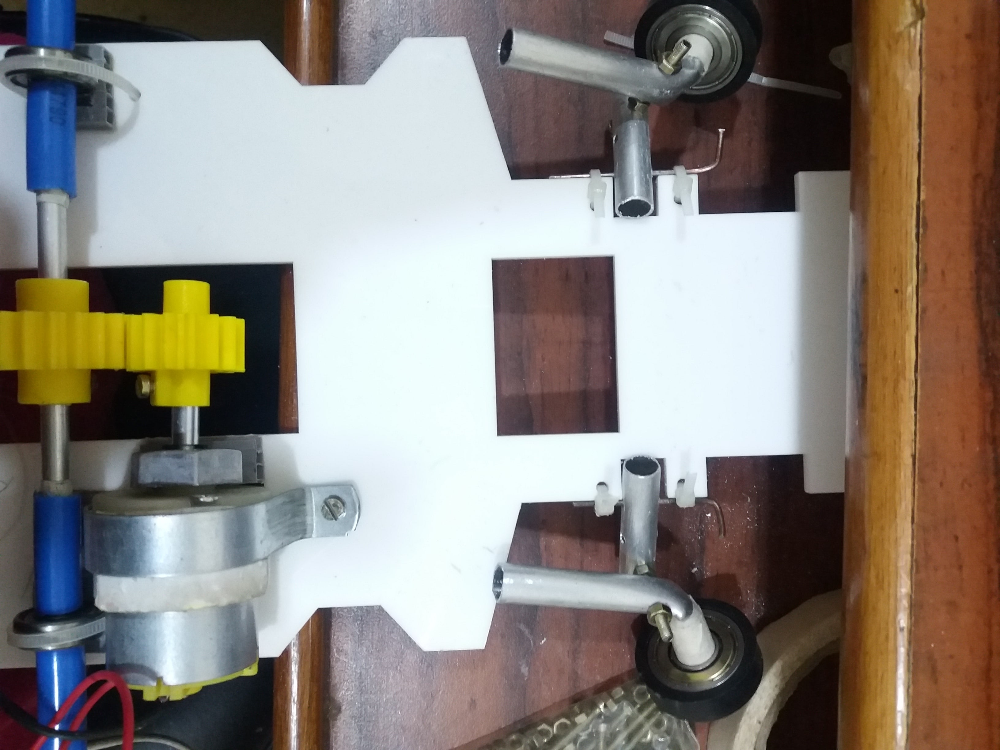

MARKING CG ON THE CHASSIS:
The material i'm using for chassis is acrylic having thickness of 4mm, wheel base is 15cm.I discovered it later on that this brown cover or paper whatever you call it must be removed.You will observe white chassis in the end pics.Let me tell you its the same chassis i have been using only the paper is removed.I will suggest you to remove this brown paper on chassis before starting.1.Locate the midpoint of wheelbase and draw the line passing through it.You can also say we are now going to draw perpendicular bisectors of the wheelbase of chassis
2.Similarly, locate the midpoint of the length of chassis and draw the line passing through it.
3.The lines drawn are called the centre lines of the chassis.
4.The point of intersection of these centre lines is the Centre of Gravity(CG) of the chassis.
FIXING THE MOTOR AND REAR AXLE ON CHASSIS:
1.Fix the 15 teeth gear on motor by tightening the screw using screw-driver.2.Now place the motor on the chassis such that the gear is aligned with the centre line.
3.We'll be fixing the motor with the help of U-clamp.For this firstly, put the clamp on the motor and mark the points for hole.
4.Using drillbit of 3mm, drill the holes and then tighten the screw properly(NOTE: Use washers also for proper fastening).As in my case their was a gap between the U-clamp and motor even after proper tightening.Double-sided tape came to my rescue and yea the gap was filled.
5.I also used a piece of chloroplast sheet under the nut of the motor for proper alignment of gear and motor on the chassis.Use glue on all sides of sheet for proper fixing.

6.Now for the rear axle.Measure the length of the axle and mark its midpoint.In my case the length was 14.8cm so i marked a point at 7.4cm using marker.
7.Measure the width of gear(say2.8cm).So its 1.4cm should be at either sides of the axle, mark these points.Place the gear properly and tigthen the screw as shown.
8.Now engage the gears of motor and axle properly and mark points of 1.5cm on the shaft away from the edges of the chassis.I have marked this point to fix the bearings at this place.
9.But for fixing the bearings, we first need to put the sleeves such that it sandwitches the bearing to prevent its lateral motion.
10.So, for the sleeves I was provided with 2 pipes.I selected the one which fitted the shaft properly so as to restrict the lateral movement.Cut the pipe into four 2.5cm pieces(sleeve).
11.Insert a sleeve on one side of the axle such that its inner edge touches the point marked in step7.
12.Insert the bearing and one more sleeve to sandwitch it.Do the same on other side of the axle as well.
13.Here I'm using a piece of chloroplast sheet to prevent the sliding of bearings on the chassis.For it,cut a 1cmx1cm of slot in a 2.5cmx2.5cm piece of chloroplast sheet using paper cutter such that only top layer is removed.
Use sharp tools carefully.I got a severe cut on my index finger while making the slot.
14.Mesh the gears of motor and axle, make sure that the gear on rear axle is positioned left as shown.
15.Place the sheet under the bearing and fix it on chassis using glue on all the four sides.
16.Mark the points on the chassis next to chloroplast benches along the centre-line of bearing on both the sides.
17.Do make sure on the right side point is marked between the motor and bearings to make drilling process easy.
18.Drill 3mm hole at the points marked on the chassis.
19.Tighten the bearings(not too much)using zip ties through the holes drilled.
7.Measure the width of gear(say2.8cm).So its 1.4cm should be at either sides of the axle, mark these points.Place the gear properly and tigthen the screw as shown.
8.Now engage the gears of motor and axle properly and mark points of 1.5cm on the shaft away from the edges of the chassis.I have marked this point to fix the bearings at this place.
9.But for fixing the bearings, we first need to put the sleeves such that it sandwitches the bearing to prevent its lateral motion.
10.So, for the sleeves I was provided with 2 pipes.I selected the one which fitted the shaft properly so as to restrict the lateral movement.Cut the pipe into four 2.5cm pieces(sleeve).
11.Insert a sleeve on one side of the axle such that its inner edge touches the point marked in step7.
12.Insert the bearing and one more sleeve to sandwitch it.Do the same on other side of the axle as well.
13.Here I'm using a piece of chloroplast sheet to prevent the sliding of bearings on the chassis.For it,cut a 1cmx1cm of slot in a 2.5cmx2.5cm piece of chloroplast sheet using paper cutter such that only top layer is removed.
Use sharp tools carefully.I got a severe cut on my index finger while making the slot.
14.Mesh the gears of motor and axle, make sure that the gear on rear axle is positioned left as shown.
15.Place the sheet under the bearing and fix it on chassis using glue on all the four sides.
16.Mark the points on the chassis next to chloroplast benches along the centre-line of bearing on both the sides.
17.Do make sure on the right side point is marked between the motor and bearings to make drilling process easy.
18.Drill 3mm hole at the points marked on the chassis.
19.Tighten the bearings(not too much)using zip ties through the holes drilled.

CONNECTING ROD FOR SUSPENSION:
1.Take 15cm aluminium rod.Cut two 4cm pieces from it using jr. hacksaw.Finish the edges using sandpaper.2.Now on both the pieces mark a point(say A)1.1cm away from either side of the rod(say O).
3.Mark another point from A at 1cm(say B).
4.Now turn the rod at an angle of 90 and mark a point from 'O' at 3.1cm(sayC).
5.I will be drilling these holes now.Drilling will be easier if you flatten the rod a lil.
6.At point 'A' use a drillbit of 2mm for drilling hole.
7.Drill other two holes by using a drillbit of 3mm.Remove the abrasives by using sandpaper.
8.Take two 5cm copper connecting rod.Make it L-shaped at 1cm using nose-plier.Be careful as re-shaping it again will break the copper rod.
9.Insert this copper connecting rod in the 2mm hole drilled on the aluminium rod.
10.For fixing the connecting rod, mark two points at a distance of 5mm from the edges of the slot provided on the chassis.Repeat the same procedure on other side too.
11.Drill the holes marked in above step using 3mm drillbit.Fix the connecting rod using zip ties such that they are fixed with the chassis.
12.Make sure that the L-shaped bent is towards the front end of the chassis.
13.The aluminium rod must be free to move after fixing of connecting rod.
FIXING THE SUSPENSION:
1.Fix the two aluminium L-clamps on the chassis by marking the holes on the chassis and drilling them with 3mm drillbit.Tighten the screw properly.2.Take a 3mm screw and pass it thrugh the second hole(3mm) of the connecting rod and fix it tight with the nut using screw driver.
3.Take a 2.5cm sleeve and insert it in the screw of connecting rod as shown.Follow the same procedure on the other side as well.
4.To fix the suspension, first insert a screw of 3mm on the topmost hole of the L-clamp and tighten it with nut by using nose-plier and screw-driver.After that we will push the sleeve in the screw.
5.Do repeat the same procedure on the other clamp.
NOTE:If the sleeve do not fix tightly you can use washers at bith the ends to restrict its motion.
6.Now take the suspension and fix it on the screw which you have just assembled in the clamp and pipe.Make sure to keep the rotating heads upwards.
7.After this fix the suspension with the nuts on both the sides.
8.Follow same steps on the other side.
FABRICATION OF THE STEERING ARM:
1.Take 15cm long aluminium rod and mark its midpoint.Cut it by using Jr.Hacksaw.2.Mark a point at 2.5cm from one end(say A) of the rod.Mark another point at 2mm from A.
3.Draw line on both the points marked above.Make a block of height not more than 2mm by joining both the lines.
4.Follow the same procedure on the second rod as well.
5.For cutting a slot,cut on the lines marked by tilting the Jr.Hacksaw so that it forms a V-shape.Width of slot must not exceed 2mm.
6.Place the nose-plier on the slot and press it to flatten the rod a little.It will faciliate easy bending of the rod.
7.Now using two nose-pliers hold the rod at both the ends and bend the rod at the required angle of 110.Draw the image as shown with correct angles and use it as reference for bending the rods.
8.Mark a point at a distance of 5mm from the bent area as shown.
10.Drill the punched holes using drillbit of 3mm.
11.Insert the ball bearings in the couplers.
12.Put the smaller arm of the steering arm into the ball-bearing.If it doesnot fit tightly use some paper-tape to increase the outer diameter of the steering arm,this is what I did.
13.Take a 3mm screw and insert it in the connecting rod which is already attached with the chassis.Tighten the nut using nose-plier and screw-driver.
14.Now insert the bent rod in this screw and tighten it with nut such that the motion of bent rod is not restricted. 15.Place the wheels and tighten the screw.Do it properly as tightening much might break the coupler.
16.Apply glue in the front wheels to fix it with coupler.
17.Now fix the rear wheels also and tighten them properly by screw-driver.
18.Place the servo-motor in the slot provided on chassis smoothly as the material of chassis is brittle.Make sure that wire pass beneath the slot and servo gear is aligned with the centre-line.

FINAL STEERING CONNECTIONS:
1.I have used plastic strips as linkages to fix the steering arm and servo-arm.2.